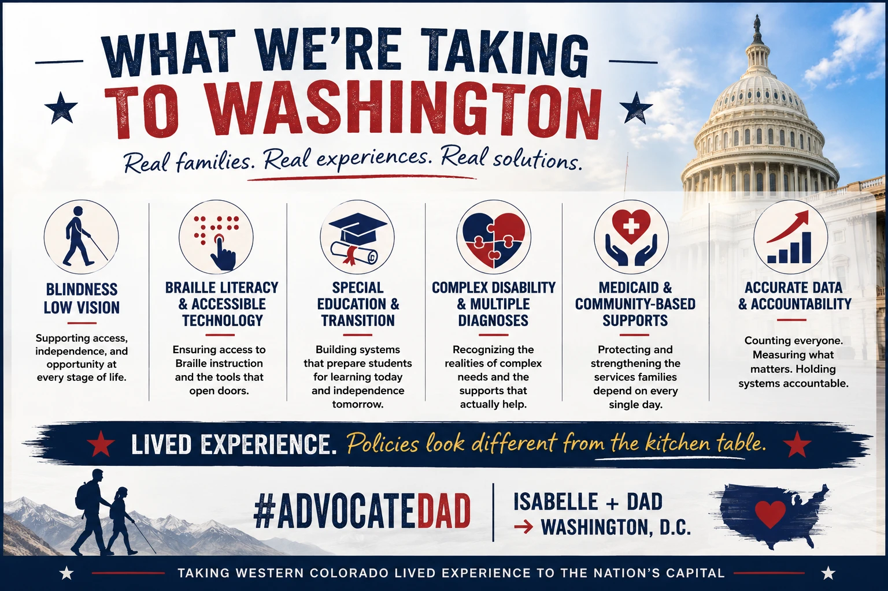

Read the graphic’s message as text
What we are taking to Washington. Real families. Real experiences. Real solutions. Blindness and low vision: Supporting access, independence, and opportunity at every stage of life. Braille literacy and accessible technology: Ensuring access to Braille instruction and the tools that open doors. Special education and transition: Building systems that prepare students for learning today and independence tomorrow. Complex disability and multiple diagnoses: Recognizing the realities of complex needs and the supports that actually help. Medicaid and community-based supports: Protecting and strengthening the services families depend on every single day. Accurate data and accountability: Counting everyone. Measuring what matters. Holding systems accountable. Lived experience. Policies look different from the kitchen table. #AdvocateDad. Isabelle and Dad to Washington, D.C. Taking Western Colorado lived experience to the nation’s capital.
I’m excited to share that Isabelle and I have been invited to join a self-advocate leadership delegation to Washington, D.C., first week of October 2026.
This is not simply an advocacy trip. It is an opportunity to bring lived experience directly into federal policy conversations.
The delegation will meet with members of Congress, national disability leaders, and organizations working at the intersection of education, employment, accessibility, and telecommunications.
A central focus will be the continued importance of a strong U.S. Department of Education and meaningful implementation of the Individuals with Disabilities Education Act (IDEA).
For Isabelle, this is an opportunity to participate as a young blind self-advocate and speak directly about education, accessibility, technology, employment, independence, and the systems that shape opportunities for young people with disabilities.
For me, it is an opportunity to bring the perspective of a Colorado parent, caregiver, and advocate to Washington—and to continue connecting high-level policy decisions with what families experience every day.
One principle has guided much of my advocacy: People with disabilities should not simply be discussed at the table. They should be sitting at it.
This time, Isabelle gets to pull up her own chair.
I am incredibly excited about what Isabelle can bring to these conversations—and what she will learn by being there.
Colorado to Capitol Hill. Let’s make sure lived experience is in the room.